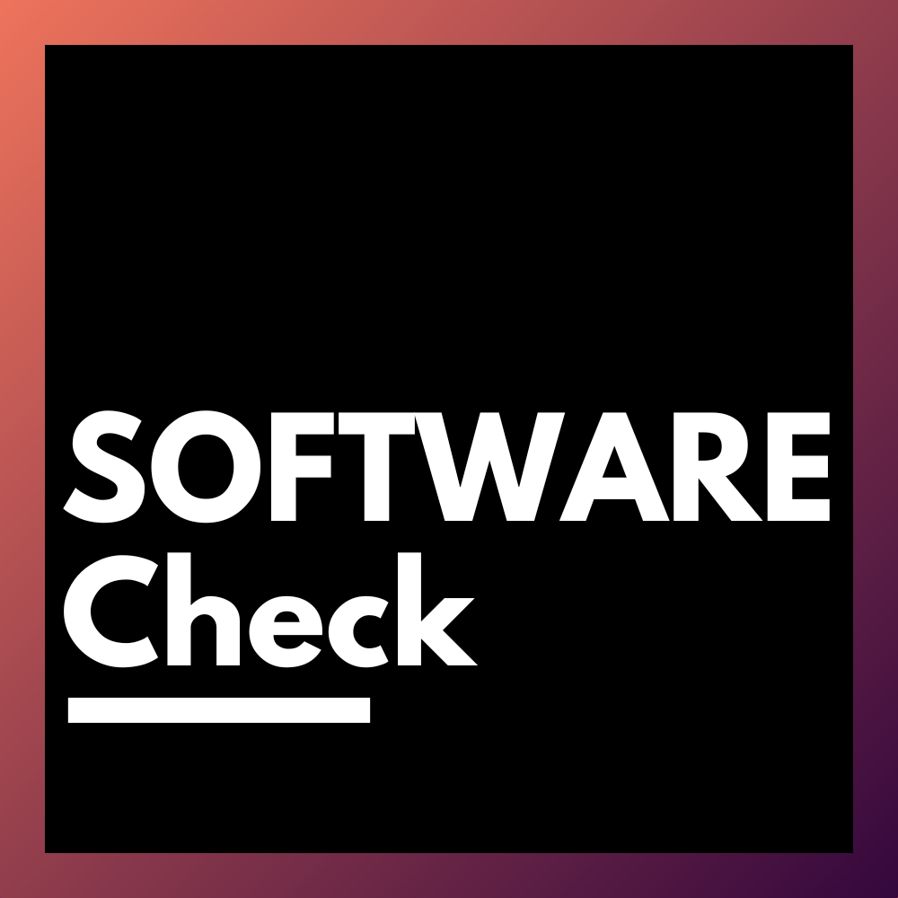
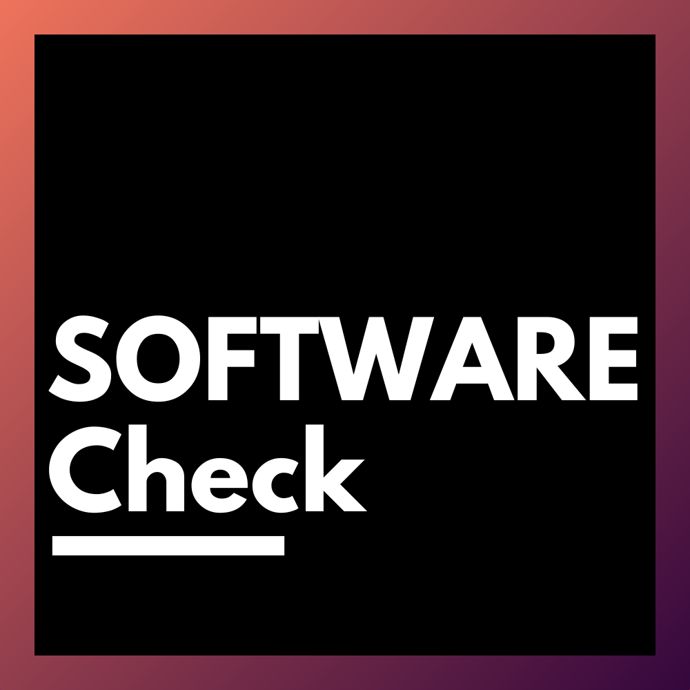

Documentation du projet SOFTware


 

Présentation
Je suis Samuel Scalbert (LinkedIn) , expert en fouille de données textuelle et documentaire à l'INRIA.
Je contribue à plusieurs projets innovants pour transformer la manière dont nous évaluons, partageons et utilisons la recherche scientifique :
- GRASP-OS : repenser l’évaluation de la recherche avec des métriques ouvertes et responsables, alignées sur la science ouverte.
- SoFAIR : améliorer la découvrabilité et l’archivage des logiciels scientifiques, pour une recherche plus reproductible.
- Datalake INRIA : structurer et centraliser toute la production scientifique d’INRIA, en exploitant Grobid et Softcite.
- Développement de logiciels : création de quatre logiciels facilitant l’analyse, l’extraction et la gestion des connaissances dans l’écosystème scientifique, dans le cadre du projet SOFTware.
Ces projets ont un objectif commun : rendre la recherche plus ouverte, interopérable et efficace.
Objectifs du projet SOFTware
Le projet SOFTware vise à développer des outils permettant de :
- Faciliter l’analyse et l’extraction de connaissances dans le domaine scientifique.
- Optimiser la gestion des données pour les chercheurs et les institutions.
- Encourager la réutilisation et la reproductibilité des résultats scientifiques grâce à des solutions open source.
Genèse du projet
Au fil de mes recherches, j’ai développé des outils pour faciliter et monitorer mes résultats et expériences. Initialement conçus pour un usage personnel, ces applications ont suscité l’intérêt de mes collègues. Afin de les rendre accessibles et utilisables par tous, j’ai décidé d’adopter une approche open source.
Tous les logiciels développés dans le cadre du projet SOFTware sont des Proof of Concept (POC).
Licence et contributions
Le projet SOFTware est entièrement open source. Toute contribution est la bienvenue !
- Pour signaler un bug ou proposer une amélioration, ouvrez une issue.
- Pour contribuer au code, soumettez une pull request.
Contact
Si vous souhaitez en savoir plus ou collaborer sur ce projet, n’hésitez pas à me contacter :